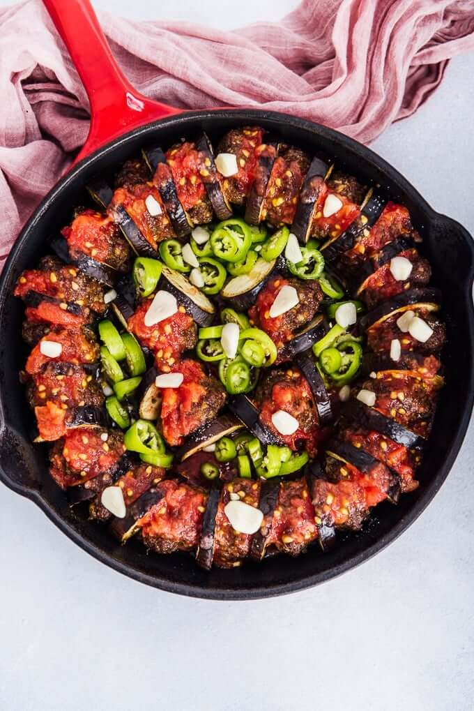

Description
Meatballs and eggplants enriched by garlic and spices come together for a
delicious dinner. What’s a better meal? Make this tasty, healthy and
filling Eggplant Kebab (Patlican Kebab) for your next dinner. It’ll be a
big hit for everyone.
Ingredients
For meatballs
- 1 pound/450g ground beef, 80% lean
- 1 onion, finely diced or pureed
- 2 cloves garlic, mashed
- 1 teaspoon cumin
- 1 teaspoon black pepper
- 1 teaspoon chili powder
- 1 and ½ teaspoon salt
- 2 tablespoons olive oil
For Eggplant Kebab:
- 2 eggplants, sliced
- 2 tablespoons olive oil
- 1 green pepper, chopped
- 4 cloves garlic, sliced
- 1 cup tomato puree
- ½ teaspoon salt
- 1 teaspoon black pepper
- Parsley for garnish